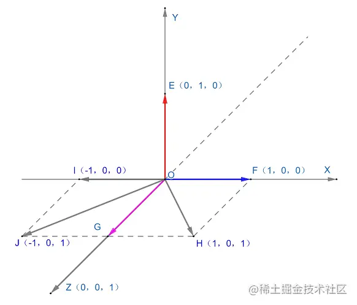
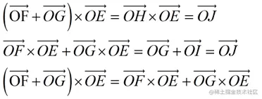

数学基础
如标题所言都是些很基础但是异常重要的数学知识，如果不能彻底掌握它们，在 3D 的世界中你将寸步难行。
坐标系
世界坐标系
在构建 3D 场景时我们需要一个坐标系来描述场景中所有点的坐标，这个坐标系也被称为世界坐标系；一般默认为你面朝计算机屏幕时，X 轴是水平的（正方向为右），Y 轴是垂直的（正方向为上），Z 轴垂直于屏幕（正方向为外）。
它可以通过上图所示的右手手势确定（右手定则），即当你伸出右手摆出如图所示手势时，拇指指向 X 轴的正方向，食指指向 Y 轴的正方向，中指指向 Z 轴的正方向，因此这种坐标系也被称为右手坐标系。
后续如果没有特殊说明，所有涉及的点、向量、坐标轴、矩阵等都是基于场景中的世界坐标系。
物体坐标系
物体坐标系又被称为自身坐标系，在 3D 场景中每个物体都有它们独立的坐标系，物体和它的自身坐标系的关系不会随着物体在世界坐标系中的变换而变化，举例来说：
上图中 X-Y-Z 坐标系是世界坐标系，X1-Y1-Z1 坐标系为小方块的自身坐标系，刚开始左侧小方块的自身坐标系的 X1 轴、Y1 轴、Z1 轴和世界坐标系的 X 轴、Y 轴、Z 轴方向相同；但是当小方块绕着自身坐标系的 X1 轴向下旋转 90 度之后，如上图中右侧所示其自身坐标系也会跟着小方块旋转，因此小方块和它的自身坐标系的关系并没有变化。
理论上来说只需要一个世界坐标系就可以描述场景中所有点的位置以及所有不同位置物体间的关系了，为什么还需要引入物体坐标系呢？
主要原因在于人们发现不同情况下使用不同的坐标系会更加方便，比如：人在书桌上操作电脑这一场景，虽说以地球上的世界坐标系（经纬度）来分别描述人和电脑的位置也可以，但是通过这两个经纬度很难直观的得到人和电脑的位置关系；如果以人的自身坐标系来描述电脑的位置（正前方 40 厘米）就相对直观方便了很多。
向量
向量是一个基础且重要的数学工具，从几何意义上来说主要用来描述事物间的位移以及指示方向，如下：
上图 XY 坐标系中 A 点坐标为 （x1，y1），B 点坐标系为 （x2，y2），从 B 点移动到 A 点时，位置的变化即为向量 BA。
简单来说向量是既有大小又有方向的线段，从 B 点移动到 A 点的方向也就是图中箭头所示的方向即为向量 BA 的方向，线段 BA 的长度即为向量 BA 的大小。
从数学表现形式上来看向量就是一个数字列表，列表中的每个数表示在不同维度上的有向位移，还是以向量 BA 为例：
从 B 点移动到 A 点，在 X 轴上位置的变化为 x1-x2，在 Y 轴上位置的变化为 y1-y2，把这两个维度上的位置的变化组合在一起最终形成了二维向量 BA；图中 BA 上方的箭头表示向量的方向是从 B 点移动到 A，有些时候不标记出来则默认前面是起始点后边是终止点。
向量数字列表有两种组织方式，水平组织的为行向量，垂直组织的为列向量；行向量和列向量的区别体现在和矩阵的乘法中，因为涉及到矩阵，这里就不过多展开了；向量运算和矩阵相关知识将会在第二小节进行详细讲解。
回到示例图，当从 O 点移动到 B 点时，可以用向量 OB 来表示；因为 O 点为坐标系原点，其坐标值为 （0，0），分别计算向量 OB 在 X 轴和 Y 轴的有向位移，写成行向量的形式如下：
向量 OB 恰好和 B 点坐标是一致的，因此可以理解向量和点在概念上完全不同，但是在数学形式上却是等价的；这也就是为什么 ThreeJS 框架中 Vector3 类型既可以用来表示三维向量又可以用来表示三维坐标系中的点，其实际含义和具体的使用场景有关。
三维、四维向量和二维向量的定义、性质基本类似，区别仅在于维度不一样。
向量的大小
向量的大小也就是向量的长度，也被称为向量的模。
以上图中 BA 向量为例，其长度也就是模，通常记为 ||BA||，根据直角三角形求斜边长公式可得：
对于任意向量，模的大小等于其每个维度数值的平方和然后开根号；这也就是 ThreeJS 框架中各向量类型计算长度的 length 函数的实现，以二维向量 Vector2 为例（其中 x 和 y 表示二维向量在 X 轴和 Y 轴的有向位移）：
你可能有点疑惑了，本文标题写的是 3D，但是文中例子却都基于 2D 坐标系？主要原因在于 2D 坐标系相对于 3D 坐标系更简单更容易理解（降维打击），虽然 3D 比 2D 多一个维度，但基本数学规律却是类似的；
比如求三维向量 Vector3 的长度，同样也是计算每个维度数值的平方和然后开根号，和二维向量 Vector2 唯一的区别仅仅在于多出一个维度而已；
类似的例子还有很多，就不一一列举了；本人对于图形编程的入门经验在于快速理解立即实践；不管是框架还是数学知识都是这种思路，具体来说对于数学知识理解即可、拿来即用、有必要才去推导，对于框架重点掌握关键知识点搭建整体轮廓。
负向量
和原向量大小相等，方向相反的向量为原向量的负向量，要得到任意向量的负向量，只需要简单地将原向量每个维度数值取负即可：
零向量
零向量是大小为 0 的向量。
单位向量
单位向量就是大小为 1 的向量，也被称为标准化向量；对任意非零向量都能计算出一个和它方向相同的单位向量，对应 ThreeJS 框架中 Vector2、Vector3、Vector4 提供的 normalize 方法。
法向量
垂直于平面的直线所表示的向量为该平面的法向量，比如：
在上述三维坐标系中 AB 向量和 CD 向量方向相同（均指向 Y 轴正方向），因此 AB 向量和 CD 向量垂直于 XZ 平面，那么 AB 向量和 CD 向量都是 XZ 平面的法向量；需要注意的是垂直于某个平面的直线可以画出无数条，这也就意味着某个平面的法向量也会有无数个。
向量可以指示方向，比如法向量就指示出了平面的朝向，利用这一性质就可以对光照模型进行数学建模：
在光的反射模型中，入射光可以看成入射向量，反射光可以看成反射向量，而法线垂直于反射面可以看成是反射面的法向量；根据实际问题建立数学模型，然后就可以进行求解了，详细过程可能会在 WebGL 相关文章中进行讲解，这里就不过多展开了。
向量相等
示例图中 AB 向量和 CD 向量大小相等、方向相同，那么它们就是相等的；除了上述判断方法之外，还可以平移 AB 向量至坐标系原点，此时 AB 向量将和 CD 向量完全重合，因此它们是相等的，这也说明向量和位置无关。
向量相加
相同维度的两个向量可以进行相加，结果向量的维度与原向量相同且每个维度数值为两个相加向量对应维度数值之和，如下：
向量加法满足三角形法则和交换律，如下：
OA 向量加 OB 向量，可以平移 OB 向量，用 OB 向量的尾连接 OA 向量的头，得到 AC 向量；接着从 OA 向量的尾向 AC 向量的头画一个 OC 向量，该向量就是 OA 向量加 OB 向量的结果向量；两个相加向量和其结果向量平移之后刚好会组成一个三角形，这就是向量加法的三角形法则。
此外交换相加向量位置并不影响结果，比如说 OB 向量加 OA 向量，此时需要平移 OA 向量至 BC 向量，根据三角形法则结果向量依然是 OC 向量，也就是说向量加法满足交换律。
向量可以用来描述事物间的位移，数字列表中的每一项表示在不同维度上的有向位移，而向量相加则是对这种位移的累加，比如：
OA 向量表示在 X 轴正方向上移动 1 个单位和在 Y 轴正方向上移动 2 个单位，而 OB 向量表示在 X 轴正方向上移动 2 个单位和 Y 轴正方向上移动 1 个单位，那么它们的结果向量就是对它们在 X 和 Y 轴上的位移的累加，也就是说结果向量 AC 表示在 X 轴正方向上移动 3 个单位且在 Y 轴正方向上也移动 3 个单位。
向量相减
相同维度的两个向量还可以进行相减，结果向量的维度依然和原向量相同，但是每个维度数值为两个相减向量对应维度数值之差，如下：
向量减法同样满足三角形法则，但是和加法有点细微的差别，如下：
还是 OA 和 OB 两个向量，但是这次执行减法操作；OA 向量减 OB 向量，平移 OB 向量，使 OB 向量的头连接 OA 向量的头，得到 CA 向量；接着从 OA 向量的尾向 CA 向量的尾画一个 OC 向量，该向量就是 OA 向量减 OB 向量的结果向量，这就是向量减法的三角形法则；和加法三角形法则的区别在于加法三角形法则是平移的被加向量和加向量头尾相连，而减法三角形法则是平移的被减向量和减向量头头相连。
加法满足交换律，但是减法并不满足，具体可以看图中 OB 向量减 OA 向量的结果为 OD 向量。
向量相乘
向量除了可以相加和相减，还可以进行相乘；向量有两种乘法类型，分别为点乘和叉乘：
- 点乘
上图中 A 点坐标为（x1，y1），B 点坐标（x2，y2），OA 向量和 OB 向量夹角为 θ。
向量点乘就是相乘向量每个维度数值乘积的和，那么 OA 向量和 OB 向量的点乘（一般使用点符号 · 来标识这种运算）结果如下：
另外从几何意义上来说向量点乘等于两个向量的大小与向量夹角的 cos 值的积，那么 OA 向量和 OB 向量的点乘结果又等于：
上述两个结果是相等的，证明如下：
因此向量点乘有一个非常常用的应用，即求两个向量的夹角。
- 叉乘
向量叉乘仅适用于三维向量，和点乘不一样，向量叉乘的结果也是一个向量，其大小等于叉乘向量组成的平行四边形面积大小，方向同时垂直于叉乘向量且满足右手定则；根据其性质向量叉乘常用于三维坐标系求平面法向量、以及判断两个向量的左右关系等。
如图所示向量 OA 和 向量 OB 叉乘结果为 OC 向量；OC 向量既垂直于 OB 向量也垂直于 OA 向量，同时其大小等于 OA 向量和 OB 向量组成的平行四边形面积大小。
另外对于 OA 向量叉乘 OB 向量；根据右手定则，大拇指指向 OA 向量的方向，食指指向 OB 向量的方向，那么中指指向的即是它们叉乘结果向量 OC 的方向；反之当 OB 向量叉乘 OA 向量时，同样根据右手定则，大拇指指向 OB 向量的方向，食指指向 OA 向量的方向，此时中指指向的是 OD 向量的方向；从上述规律中不难看出当某个向量叉乘的另外一个向量在其左侧时，它们的叉乘结果向量方向和平面法向量方向一致，而当某个向量叉乘的另外一个向量在其右侧时，它们的叉乘结果向量方向和平面法向量方向相反。
已知两个向量的左右关系，可以解决很多经典的图形学问题，比如求解空间中的点是否在某个三角形（凸多边形）内、把凹多边形拆分为多个凸多边形等。
左图中对于三角形任意边向量（AB、BC、CA）而言，其起始点和空间中点 D 组成的向量始终在边向量的左侧，那么该点 D 在三角形内部；
右图中对于任意凹多边形依次连接其顶点组成边向量，然后判断前一个边向量是否在后一个边向量的左侧，如果是则根据后边的边向量划分该凹多边形，依次类推即可把凹多边形拆分为多个凸多边形。
回归正题，OB 向量和 OA 向量夹角为 θ，根据平行四边形面积计算公式可得 OC 向量的模：
根据叉乘的定义可以推导出叉乘具备如下性质：
- 相等向量叉乘结果为 0 向量；
相等向量完全重合，它们组成的平行四边形面积为 0，也就是说它们叉乘的结果向量大小为 0，大小为 0 的向量即为 0 向量。
- 缩放叉乘向量中的某个向量，其结果向量也会被缩放相同倍数；
- 叉乘分配律，向量和的叉乘等于向量叉乘的和；
这个性质相对来说比较难以理解，但并不是没有取巧的办法；有时候如果某个性质一般情况比较难以理解的话，可以直接查看其特例，如下：

如上图所示，OE 向量、OF 向量、OG 向量分别在 Y 轴、X 轴、Z 轴上，彼此垂直；把这三个向量代入到公式中，可以很明显的看到叉乘分配律是成立的；比如 OF 向量 和 OG 向量相加得到 OH 向量，OH 向量和 OE 向量叉乘最终结果为 OJ 向量；拆看来看 OF 向量 和 OE 向量叉乘得到 OG 向量，OG 向量和 OE 叉乘得到 OI 向量，而 OG 向量和 OI 向量相加最终结果也是 OJ 向量。

也就是说对于 OE、OF、OG 这三个长度为 1 且互相垂直的向量来说叉乘分配律是成立的。
需要注意上面的特例仅仅只是本人在学习过程中偷懒取巧的做法，主要是为了方便理解，并没有证明叉乘分配律；要想证明叉乘分配律可以取任意三个向量，然后加入一些辅助手段观察其规律，和特例中的做法是类似的，有兴趣的同学可以尝试一下。
介绍了叉乘的几何意义以及一些基础性质，接下来求叉乘的具体计算规则，即已知 A 点坐标（x1，y1，z1），B 点坐标（x2，y2，z2）求 OA 向量和 OB 向量叉乘的结果 OC 向量的具体坐标。
首先假设 X、Y、Z 轴上的单位向量分别为 i、j、k：
OA 向量和 OB 向量可以写成由 i、j、k 向量相加的形式：
根据叉乘分配律拆分，最终求出叉乘结果向量 OC 的具体坐标如下：
矩阵
矩阵 Matrix 在《黑客帝国》中是一个用来囚禁人类的虚拟世界，非常神秘且强大，而我们后续所要讨论的矩阵同样具有强大的特性，它是 3D 数学中非常重要且基础的工具。从表现形式上看矩阵是如下图所示的以行和列形式组织的矩形数字块。
一个 M X N 矩阵是一个用圆括号包起来的含有 M 行、N 列的矩形数字块，比如上图中的两个矩阵则分别是 2 X 2 矩阵 和 3 X 3 矩阵；行数和列数相同的矩阵也被称为方阵，ThreeJS 框架中三阶矩阵 Matrix3 为 3 X 3 方阵，四阶矩阵 Matrix4 为 4 X 4 矩阵；另外矩阵的行数和列数可以是任意正整数，这也就意味着行向量可以看作是行数为 1 的矩阵，列向量可以看作是列数为 1 的矩阵。
有时候人们也会使用方括号包含数字块来表示矩阵，这也是被允许的；矩阵真正重要的是它的性质而不是其外形。
矩阵乘法
矩阵可以和标量相乘，矩阵可以和矩阵相乘，另外行数或者列数为 1 的矩阵等价于向量，那么矩阵也可以和向量相乘。
- 标量乘以矩阵，即标量乘以矩阵中的每个元素，最终结果为一个新的矩阵，如下：
上图中 k 为标量，M 为矩阵。
- 矩阵乘以矩阵，两个矩阵相乘需要满足一定的条件；举例来说矩阵 M 乘以矩阵 N，需要满足矩阵 M 的列数等于矩阵 N 的行数；如下：
上图中 M 为 3 X 2 矩阵，N 为 2 X 2 矩阵，矩阵 M 的列数等于矩阵 N 的行数，因此矩阵 M 可以乘以矩阵 N 得到的新矩阵 G；新矩阵 G 行数等于矩阵 M，列数等于矩阵 N；同时新矩阵 G 中第 i 行第 j 列的元素等于矩阵 M 第 i 行的元素和矩阵 N 第 j 列的元素一一相乘之后的和；如图中所示新矩阵 G 第 1 行第 2 列的元素为 m11 * n12 + m12 * n22 以此类推。
矩阵变换
在 3D 数学中矩阵的强大表现在使用矩阵我们可以很方便的进行变换，举例来说：
- 旋转
上图中我们把 OA 向量以原点 O 为基准点逆时针旋转 θ 度得到 OB 向量，已知 A 点坐标为（x1，y1），求 B 点坐标（x2，y2）。
首先旋转并不会改变向量的大小，因此 OA 向量和 OB 向量大小均为 L：
设 OA 和 X 轴之间的夹角为 α 那么：
再设 OB 和 X 轴之间的夹角为 β 那么：
根据上述已知变量和三角函数公式可以计算出 B 点坐标（x2，y2）：
此时如果我们把旋转之前的 OA 向量写成行向量形式（x1，y1），同时也是 1 X 2 的矩阵乘以某个 2 X 2的矩阵，如下：
在上述矩阵乘法中如果 m11=cosθ、m21=-sinθ、m12=sinθ、m22=cosθ 那么把得到的新的 1 X 2 矩阵看成行向量，它和 OA 向量旋转之后得到的 OB 向量是一样的，这也就说旋转变换可以用矩阵乘法来计算。
二维坐标系中以原点为基准点逆时针旋转 θ 角可以表示为如下矩阵：
- 缩放
旋转变换可以用矩阵乘法来计算，同理缩放变换也可以，举例来说：
上图中 OA 向量以原点 O 为基准点缩短为原来的 n 倍得到 OB 向量，已知 A 点坐标为（x1，y1），求 B 点坐标（x2，y2）。
根据等比缩放很容易就可以得到 B 点坐标，如下：
再次代入矩阵乘法：
当 m11=n、m21=0、m12=0、m22=n 那么把得到的新的 1 X 2 矩阵看成行向量，它和 OA 向量缩短之后得到的 OB 向量也是一样的，即证缩放变换也可以用矩阵乘法来计算。
二维坐标系中以原点为基准点缩放为原来的 n 倍可以表示为如下矩阵：
- 组合变换
上述变换都是单一变换，把多个单一变换组合到一起，依然是可以用矩阵来进行计算的，组合变换矩阵即为单一变换矩阵的乘积。
举例来说，当先进行旋转再进行缩放，其最终变换矩阵如下：
到这里大家应该明白了矩阵的强大之处了，即矩阵能描述任意线性变换，而任意线性变换的组合可以表示为矩阵连乘的形式。
线性变换
在矩阵变换中引入了一个新概念 线性变换，简单来说如果坐标系中的所有直线进行变换之后依然还是直线且坐标系原点进行变换后并没有变化，那么就可以认为这个变换是线性变换。
常见的线性变换有旋转、缩放等；得稍微注意一点，并不是任意旋转和缩放都是线性变换，准确得说是以坐标系原点为基准点的旋转和缩放才是线性变换，举例来说：
图中 OA 以 OA 上的某点 C 为基准点顺时针旋转 α 得到 BD，此时这个旋转变换会改变坐标系的原点，因此不属于线性变换；而当 OA 以原点为基准点顺时针 β 得到 OE，此时原点并没有发生变换，因此属于线性变换。
另外特别特别需要注意平移并不是线性变换，因为平移会改变坐标系原点，如下：
上图中 OA 向量沿着 X 轴正方向平移一定距离 m 得到 CB 向量，已知 A 点坐标为（x1，y1），求 B 点坐标（x2，y2）。
沿着 X 轴正方向平移并不会改变 Y 轴坐标，而 X 轴坐标系为原有坐标加上平移距离，因此得到 B 点坐标，如下：
代入矩阵乘法：
我们会发现没办法求出 m21，目前看来是不能用矩阵来描述平移变换了。
齐次坐标
齐次坐标就是新增一个额外的维度，用N+1维来表示N维坐标；把坐标统一转换为齐次坐标之后就可以解决组合变换中存在平移时不能用矩阵连乘表示的问题了。
首先举例说明齐次坐标，如下：
在二维坐标系 XY 中存在一点 A 坐标为（x1，y1），我们可以把该二维坐标系放置在某个虚拟三维坐标系的特定位置，比如三维空间 W 轴 为 1 的位置，此时在这个虚拟三维坐标系中 A 点又可以表示为（x1，y1，1）；新增一个额外维度之后 A 点坐标可以表示为 （x1*w，y1*w，w） 的形式，即把原有坐标值乘以新增坐标值 w；同理已知齐次坐标转换为原有坐标时，只需要把齐次坐标除以新增坐标值 w 即可。
A 点坐标（x1，y1）表示为 （x1*w，y1*w，w） 形式后随着 w 取值的变化有无数种形式，这些都是 A 点坐标（x1，y1）的齐次坐标。
接着使用齐次坐标解决用矩阵表示平移变换的问题，如下：
还是一样的问题 OA 向量沿着 X 轴正方向平移一定距离 m 得到 CB 向量，已知 A 点坐标为（x1，y1），求 B 点坐标（x2，y2）。
先把 A 点坐标转换为齐次坐标（x1，y1，1），沿着 X 轴正方向平移并不会改变 Y 轴坐标，而 X 轴坐标系为原有坐标加上平移距离，因此得到 B 点齐次坐标，如下：
把 OA 向量写成行向量形式（x1，y1，1），此时是 1 x 3 的矩阵乘以某个 3 X 3 的矩阵，如下：
把得到的 B 点齐次坐标代入上述矩阵乘法，你会发现当 m11=1、m21=0、m31=m、m12=0、m22=1、m32=0、m13=0、m23=0、m33=1 时，二维坐标系中的平移变换也可以表示为矩阵形式了，如下：
使用齐次坐标顺利把平移变换转换成矩阵形式之后，存在平移的组合变换依然不能用矩阵连乘表示；因为齐次坐标的引入导致平移变换比其它线性变换多了一个维度；以二维坐标系为例，其它线性变换矩阵为 2 X 2 矩阵，但是平移变换矩阵为 3 X 3 矩阵，根据矩阵乘以矩阵需要满足前一个矩阵的列数等于后一个矩阵的行数这一原则，它们之间是不能相乘的；解决的办法是其它线性变换也引入齐次坐标，最终得到的变换矩阵就可以相乘了。
这也就是为什么处理三维问题的 ThreeJS 框架中会存在四维向量 Vector4 和四维矩阵 Matrix4 的原因了；因为三维坐标的齐次坐标为四维坐标，而四维齐次坐标对应的变换矩阵为四维矩阵。
对角矩阵
当我们把行号和列号以下标的形式标注在矩阵元素上时；比如：第一行第一列的元素下标为 11，第 m 行第 n 列的元素下标为 mn，那么某个 3X3 方阵如下图所示：
其对角线元素就是方阵中行号和列号相同的元素，对应上图中的 a11、a22、a33；其它元素为非对角线元素。如果方阵中所有非对角元素均为 0，那么这个方阵也被称为对角矩阵，如下：
单位矩阵
单位矩阵是一种特殊的对角矩阵，其对角线元素均为 1，通常记为 I，任何矩阵和单位矩阵相乘都等于其本身，从矩阵变换的角度来看，即单位矩阵的矩阵变换，变换前和变换后没有变化。
行列式
矩阵的行列式也是就是矩阵的“大小”，不过并不是所有矩阵都有大小，只有行数和列数相同的方阵才有大小；向量的大小表示向量的长度，方阵的大小则表示坐标系中基向量（坐标轴单位向量）经过该方阵变换后的新向量组成的平行四边形的有符号面积（二维坐标系）、平行六面体的有符号体积（三维坐标系）以此类推。
以某 2X2 方阵 A 为例：
二维坐标系中的基向量 X、Y 分别乘以方阵 A 得到新向量，画图表示如下：
X 轴基向量变换后的新向量为 OC，Y 轴基向量变换后的新向量为 OD，而 OC 向量和 OD 向量组成的平行四边形的有符号面积即为矩阵 A 的大小也就是矩阵 A 的行列式。
有符号的意思是可正可负，在上图中变换后的基向量组成的平行四边形相对于初始基向量组成的平行四边形，位置发生了翻转，那么方阵 A 的行列式等于变换后基向量组成的平行四边形面积的负数。
仔细观察上述例子中变换后的新向量 OC 和 OD 以及方阵 A，我们会发现方阵其实是由变换后的基向量组合而成，这一性质对于任意方阵以及任意维度都是成立的：
已知方阵即可得变换后的基向量 OC、OD，再根据平行四边形面积公式求该方阵行列式：
对于二维方阵来说，其行列式等于对角元素的积减去反对角元素的积。
余子式、代数余子式
假设矩阵 M 有 r 行 c 列，从中任意移除某一行和某一列后剩下的有 r-1 行 c-1 的矩阵被称为矩阵 M 的余子式，如下：
例子中移除的是第 1 行和第 2 列，因此余子式记为 {1,2}，如果移除的是第 i 行和第 j 列则记为 {i,j}。
代数余子式等于相应余子式的有符号行列式，计算方阵 M 第 i 行、第 j 列的代数余子式如下：
计算高阶方阵的行列式需要借助余子式和代数余子式；首先从矩阵中任意选择一行或一列，对该行或该列的每个元素都乘以对应的代数余子式，然后把它们加起来得到的和即是该矩阵的行列式。
以三阶方阵为例：
求任意高维度方阵的行列式最终都可以递归转化为求二阶方阵行列式问题。
转置矩阵
假设存在两个矩阵 M 和 T：
其中矩阵 T 的横行由矩阵 M 的纵行组成，而其纵行又是由矩阵 M 的横行组成，那么就称矩阵 T 为矩阵 M 的转置矩阵，记为：
当转置矩阵双方均为方阵时看起来就好像是沿着对角线翻折一样。
矩阵相乘的转置等于先转置矩阵然后再倒序相乘，这一结论可以扩展到任意矩阵相乘的情形：
标准伴随矩阵
矩阵的标准伴随矩阵为其代数余子式矩阵的转置矩阵，记为 adj M；以三阶方阵为例：
逆矩阵
给定一个 n X n 方阵 A，若存在另一 n X n 方阵 B，使得 A*B = B*A = I，其中 I 为 n X n 单位矩阵，如下：
那么方阵 A 是可逆的，且方阵 B 是方阵 A 的逆矩阵，用公式表示如下：
逆矩阵通常用于变换还原，比如某向量 V 用矩阵 M 进行变换，如果要想还原回去只需要再用矩阵 M 的逆矩阵进行变换即可：
矩阵的逆矩阵等于其标准伴随矩阵除以其行列式：
当矩阵的行列式为零时上述公式是没有意义的，因此并不是所有矩阵都有逆矩阵，检测行列式的值是判断矩阵是否可逆的有效方法。
通过上述方法求矩阵 A 的逆矩阵详细过程如下：
正交矩阵
对于某个矩阵 A，如果其转置换矩阵等于其逆矩阵，则称该矩阵 A 为正交矩阵：
已知某个矩阵为正交矩阵，那么就可以根据上述性质快速求出其逆矩阵；以旋转变换为例（旋转矩阵为正交矩阵）：
二维坐标系中 OA 以原点为基准点逆时针旋转 θ 角到 OB ，旋转矩阵如下：
其逆矩阵也就是上述旋转的反向旋转矩阵，根据正交矩阵的性质可得 OB 以原点为基准点顺时针旋转 θ 角到 OA 的旋转矩阵为：
逆转置矩阵
对某一矩阵 M 先计算其逆矩阵，再计算其逆矩阵的转置矩阵，最后得到的矩阵即为矩阵 M 的逆转置矩阵。
逆转置矩阵和法向量变换有关：
上图为某 3D 坐标系 Z 轴正视图，在该坐标系中存在一平面，P1、P2 为平面上两点，向量 N 为其法向量；如果该平面在 X 轴方向上缩放为原来的 0.5 倍，那平面上所有点的 X 轴坐标都缩放为原来的 0.5 倍数；但是其法向量的变换和点的变换有点不一样；如果法向量也在 X 轴上缩放 0.5 倍，那么就会变成中间图的样子，但平面法向量应该始终垂直于平面，因此实际情况应该右侧图。
究其原因在于法向量变换矩阵应该是顶点变换矩阵的逆转置矩阵，证明过程如下：
通过上述例子理解即可，证明过程能看明白最好，万一看不明白关系也不大。
已知 P1、P2 为平面上两点，从点 P1 移动到点 P2 表示为向量 T（t1，t2，t3），平面法向量为 N（n1，n2，n3）：
该平面经过某矩阵 M 变换后，向量 T 变为向量 T' （t1'，t2'，t3'），平面法向量为 N'（n1'，n2'，n3'）：
平面法向量始终垂直于平面，那么向量 N 垂直于向量 T，向量 T' 垂直于 N'，也就是说它们的点乘结果为 0：
把向量看成矩阵，同理可得：
矩阵 M 和其逆矩阵相乘为单位矩阵 I，向量 T 经过矩阵 M 变换后 为 T'：
两式相等即可得：
证明完毕。
投影
在上文中我们学习了世界坐标系和物体坐标系，理解了这两个坐标系我们就可以正确使用 ThreeJS 中的变换方法了；但是 ThreeJS 中的坐标系不仅仅只有这两种，还包括相机坐标系和屏幕坐标系。
当我们在场景中加入相机并拍摄场景时，其实就相当于以相机的视角来重新描述场景，最后再以某种投影方式成像于屏幕上，如下图所示：
O 为物体坐标系，W 为世界坐标系，C 为相机坐标系，S 为屏幕坐标系；以相机的视角重新描述场景相当于把场景从世界坐标系变换到相机坐标系，这个变换矩阵称之为视图矩阵；最后相机会把它观察到的场景投影到屏幕上，相当于进行一次投影变换，这个变换矩阵称之为投影矩阵。
视图矩阵
相机坐标系中的三个轴如示例图所示分别为相机 Y 轴（上方向）、相机 Z 轴（相机视线反方向）以及相机 X 轴（右方向）；在初始化相机时我们设置了相机的位置 P（p1，p2，p3）、相机的焦点 Q （q1，q2，q3）以及相机的上方向向量 U （ux，uy，uz）；
根据上述条件可得相机 Z 轴（相机视线反方向）单位向量 F（fx，fy，fz）：
再已知相机 Y 轴向量，而 Z 轴和 Y 轴的叉乘向量即为 X 轴向量 S（sx，sy，sz）：
视图矩阵会把场景从世界坐标系变换到相机坐标系；而在相机坐标系中，相机位置在坐标系原点 O（0，0，0），其 Y 轴单位向量为（0，1，0），Z 轴单位向量为（0，0，1），X 轴单位向量为（1，0，0）；也就是说经过视图矩阵变换之后 U 向量变为 Y 向量，F 向量变为 Z 向量，S 向量变为 X 向量，P 点移动到 O 点；如下图所示：
那么视图矩阵可以拆分为先平移再旋转的混合变换；P 点移动到 O 点，平移矩阵如下：
接着进行旋转变换，让 U 向量变为 Y 向量，F 向量变为 Z 向量，S 向量变为 X 向量；可以先求该旋转变换的逆变换，即 Y 向量变为 U 向量，Z 向量变为 F 向量，X 向量变为 S 向量，基向量变换矩阵由变换后的基向量组合而成：
由于旋转矩阵为正交矩阵，其逆矩阵等于其转置矩阵；根据转置矩阵的规律，可得：
最终求得视图矩阵如下：
投影矩阵
投影矩阵则会把相机坐标系中的场景转换到投影平面上，以透视投影为例：
透视投影相机的相关参数共同决定相机的可视区域，也被称为视锥体；只有在视锥体内的场景才能被相机观察到从而显示在投影平面上，其它部分在投影变换时会被裁剪掉；但是在视锥体中进行裁剪并非那么容易的事情，需要转换到一个规则观察体中进行：
如上图所示规则观察体是一个正方体，其 x、y、z 的范围均为 [-1,1]。
把视锥体转换为规则观察体首先需要以视锥体中轴线为中心向内压缩其远平面至完全和近平面大小相同且远平面 Z 轴位置不变，如下：
因为 3D 空间变换较为复杂，根据惯例降维处理，先从某个切面来观察；从 XZ 切面来看，对于视锥体远平面上的某点 P（xp，yp，zp），当视锥体向内压缩后会移动到 N 点位置：
根据相似三角形的性质：
同理可得：
在上述例子中 P 点在恰好在远平面上，根据向内压缩保证远平面 Z 轴位置不变，那么 N 点也在远平面上，显而易见 zn = zp；但是对于视锥体中任意点，经过向内压缩，我们并不能保证它们具有和远平面点 Z 轴不变一样的性质；因此把上述规律扩展到视锥体内任意一点 P，其向内压缩之后的新位置 N 点坐标如下：
转换为齐次坐标：
倒推出该向内压缩矩阵 Mc 为：
另外视锥体中远平面和近平面上的点经过向内压缩后 Z 轴不变，也就是说：
最终求出视锥体以中轴线为中心向内压缩变换矩阵如下：
把视锥体以中轴线为中心向内压缩之后得到一个立方体，接着把该立方体的中心移动到坐标系原点：
已知近平面和远平面距离，即可求出立方体中心点坐标 C（0，0，-far/2-near/2），其移动到坐标系原点的平移矩阵 Mt 如下：
最后还需要把平移到坐标系原点的立方体进行缩放，从而让其 x、y、z 范围为 [-1,1]：
近平面宽为 w，高为 h，水平宽度等于远平面距离减近平面距离 far-near，那么缩放矩阵 Ms 如下：
把视锥体转换为规则观察体，变换后场景中的物体丢弃 Z 轴坐标即是其在投影面上的坐标；因此最终投影变换矩阵 Mp = Mc * Mt * Ms：
视口变换矩阵
计算得到物体在投影面上的坐标之后，还需要进行最后一步操作，把投影面坐标转换为屏幕坐标，也被称为视口变换：
图中右侧为屏幕坐标系，以屏幕左下角为原点，X 轴水平向右，Y 轴垂直向上；假设屏幕宽度为 width，高度为 height，从投影面坐标转换为屏幕坐标系，需要先进行缩放，然后再平移即可，变换矩阵如下：
总结
这些概念需要了解清楚，因为会陆续出现在后续的章节中并用于一些问题的解决，比如：向量点乘计算向量夹角被用于漫反射入射光颜色计算、逆转置矩阵被用于法向量变换矩阵计算等。